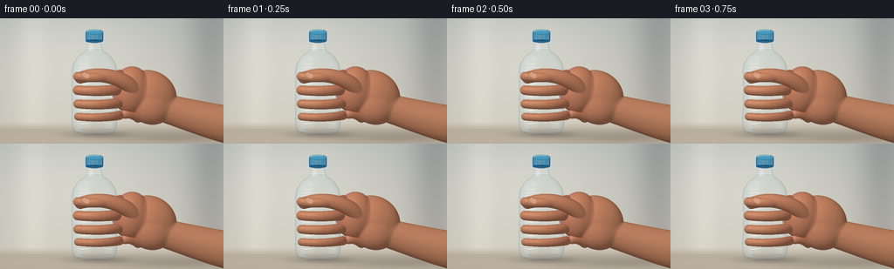
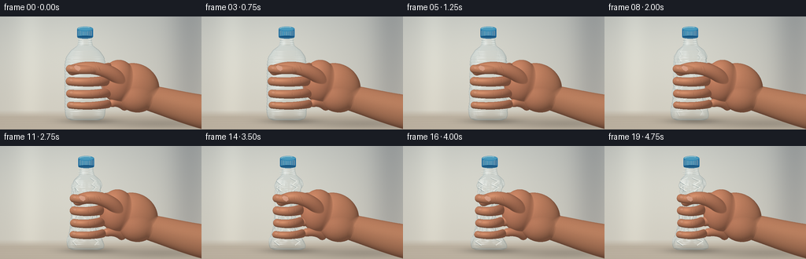
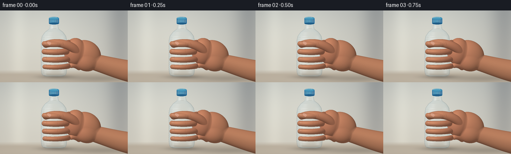
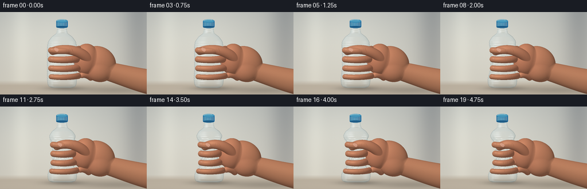

CODING AGENTS AS PIXEL WORLD MODELS
traex/GPT-6.1-Sol · mechanics_0017
点击播放 · 原生 RGB 像素
逐轮保存的候选
回放视频、检查图与代码变化。
每份候选均可单独播放。实际图片检查记录在下方工具轨迹中。
候选 01播放与检查图
点击播放 · 原生 RGB 像素


展开代码变化
--- 上一保存版本
+++ 本次保存版本
@@ -0,0 +1,290 @@
+"""Procedural close-up: a hand progressively compresses an empty PET bottle.
+All geometry, shading and animation are generated locally from analytic shapes.
+"""
+from pathlib import Path
+import numpy as np
+from PIL import Image, ImageDraw, ImageFilter
+import artifact_io
+
+ROOT=Path(__file__).resolve().parent
+S=3; W=256*S; H=144*S
+Y,X=np.mgrid[0:H,0:W].astype(np.float32)
+X=X/S; Y=Y/S
+rng=np.random.default_rng(17)
+noise=rng.normal(0,1,(H,W)).astype(np.float32)
+
+# An out-of-focus warm neutral room and pale wooden worktop.
+def background():
+ a=np.zeros((H,W,3),np.float32)
+ vertical=np.clip(Y/150,0,1)
+ for c,(top,bot) in enumerate([(182,210),(185,205),(181,192)]):
+ a[:,:,c]=top+(bot-top)*vertical
+ glow=np.exp(-((X-79)/113)**2-((Y-36)/79)**2)
+ a+=glow[:,:,None]*np.array([24,23,20])
+ # Very soft architectural color fields; no distracting objects.
+ a-=np.exp(-((X-241)/26)**2)[:,:,None]*np.array([28,27,23])
+ a+=np.exp(-((X-37)/16)**2)[:,:,None]*np.array([10,10,9])
+ table=np.clip((Y-119)/9,0,1)
+ a=a*(1-table[:,:,None])+np.array([191,180,163])*table[:,:,None]
+ grain=(np.sin(Y*2.1+np.sin(X*.016))*1.1+np.sin(Y*.33+X*.01)*.8)*table
+ a+=grain[:,:,None]
+ shadow=np.exp(-((X-113)/33)**2-((Y-133)/4.0)**2)*.25
+ shadow+=np.exp(-((X-201)/71)**2-((Y-136)/7)**2)*.16
+ a*=1-shadow[:,:,None]
+ a+=noise[:,:,None]*.38
+ return a
+BG=background()
+
+# Analytic orthographic depth of an ellipsoid; smoothly union neighboring
+# ellipsoids to construct continuous organic palm, wrist and finger volumes.
+def ellipsoid(depth,cx,cy,cz,rx,ry,rz,angle=0,k=.6):
+ pad=2
+ ext=max(rx,ry)+pad
+ x0=max(0,int((cx-ext)*S)); x1=min(W,int((cx+ext)*S)+1)
+ y0=max(0,int((cy-ext)*S)); y1=min(H,int((cy+ext)*S)+1)
+ if x0>=x1 or y0>=y1: return
+ xx=X[y0:y1,x0:x1]-cx; yy=Y[y0:y1,x0:x1]-cy
+ ca=np.cos(angle); sa=np.sin(angle)
+ u=(ca*xx+sa*yy)/rx; v=(-sa*xx+ca*yy)/ry
+ q=1-u*u-v*v; valid=q>0
+ zz=cz+rz*np.sqrt(np.maximum(q,0))
+ old=depth[y0:y1,x0:x1]
+ both=valid & (old>-500)
+ d=np.where(valid,zz,-1000)
+ if k:
+ # Polynomial smooth maximum, compactly supported at the seam.
+ h=np.maximum(k-np.abs(d-old),0)/k
+ new=np.maximum(old,d)+h*h*k*.25
+ old[:]=np.where(both,new,np.maximum(old,d))
+ else: old[:]=np.maximum(old,d)
+
+def path_points(control,n=70):
+ t=np.linspace(0,1,n)[:,None]
+ if len(control)==4:
+ p=np.array(control,float)
+ return (1-t)**3*p[0]+3*(1-t)**2*t*p[1]+3*(1-t)*t*t*p[2]+t**3*p[3]
+ p=np.array(control,float)
+ return (1-t)**2*p[0]+2*(1-t)*t*p[1]+t*t*p[2]
+
+def tube(depth,points,radii,flatten=.89):
+ for i,(x,y,z) in enumerate(points):
+ r=radii[i] if np.ndim(radii) else radii
+ ellipsoid(depth,x,y,z,r,r, r*flatten,k=.8)
+
+# Bottle coordinates: y is image-space; cap and base are left largely intact.
+def bottle_rings(p):
+ ys=np.arange(25*S,132*S+1)/S
+ theta=np.linspace(-np.pi,np.pi,193)
+ # The lid is separate. Shoulder, neck, body and molded base.
+ levels=[25,32,37,43,51,60,108,119,126,130,132]
+ radii=[8.6,8.6,10,18,24,26,26,26,25,23,18]
+ base=np.interp(ys,levels,radii)
+ grip=np.exp(-((ys-83)/27)**4)
+ xs=np.empty((len(ys),len(theta))); zs=np.empty_like(xs)
+ for j,y in enumerate(ys):
+ g=grip[j]
+ # Indentation grows monotonically and forms distinct diagonal buckles.
+ rr=base[j]*(1-.055*p*g)
+ fold=p*g*(1.85*np.sin(theta*7+(y-55)*.38)+1.25*np.sin(theta*11-(y-40)*.27))
+ ridge=.31*np.cos(y*1.65) if 51<y<122 else .1*np.cos(y*3)
+ rad=rr+ridge+fold
+ stretchx=1-.52*p*g
+ stretchz=1-.14*p*g
+ center=108+1.7*p*np.sin((y-25)*.028)
+ xs[j]=center+rad*np.sin(theta)*stretchx
+ zs[j]=rad*np.cos(theta)*stretchz
+ # PET folds create alternating flattening/triangular corrugations.
+ zs[j]+=p*g*1.1*np.sin(theta*4+y*.40)
+ return ys,xs,zs
+
+def bottle_depth(p):
+ ys,xs,zs=bottle_rings(p)
+ front=np.full((H,W),-1000,np.float32)
+ back=np.full((H,W),1000,np.float32)
+ for j,y in enumerate(ys):
+ row=int(round(y*S))
+ if row>=H: continue
+ xx=xs[j]; zz=zs[j]
+ # Intersect rays with every segment of the deformed ring, retaining
+ # nearest and farthest surface. Works for concave collapsed sections.
+ for k in range(len(xx)-1):
+ a,b=xx[k],xx[k+1]
+ lo=max(0,int(np.ceil(min(a,b)*S))); hi=min(W-1,int(np.floor(max(a,b)*S)))
+ if hi<lo or abs(b-a)<1e-7: continue
+ x=np.arange(lo,hi+1)/S
+ z=zz[k]+(zz[k+1]-zz[k])*(x-a)/(b-a)
+ front[row,lo:hi+1]=np.maximum(front[row,lo:hi+1],z)
+ back[row,lo:hi+1]=np.minimum(back[row,lo:hi+1],z)
+ return front,back
+
+def normals(depth,mask):
+ # Finite differences with a neutral continuation outside the silhouette.
+ d=depth.copy(); d[~mask]=0
+ dx=np.zeros_like(d); dy=np.zeros_like(d)
+ dx[:,1:-1]=(d[:,2:]-d[:,:-2])*S*.5
+ dy[1:-1]=(d[2:]-d[:-2])*S*.5
+ nx=-dx; ny=-dy; nz=np.ones_like(d)
+ length=np.sqrt(nx*nx+ny*ny+1)
+ return nx/length,ny/length,nz/length
+
+def skin_shader(depth,p):
+ mask=depth>-500
+ nx,ny,nz=normals(depth,mask)
+ light=np.maximum(0,-.48*nx-.53*ny+.70*nz)
+ fill=np.maximum(0,.75*nx+.15*ny+.63*nz)
+ # Warm subsurface diffusion with broad, low sheen.
+ sh=.53+.48*light+.055*fill
+ base=np.stack([np.full_like(X,195),np.full_like(X,133),np.full_like(X,99)],axis=-1)
+ warm=np.exp(-((X-141)/48)**2-((Y-90)/42)**2)
+ base[:,:,0]+=warm*6; base[:,:,1]-=warm*2
+ color=base*sh[:,:,None]
+ hl=np.maximum(0,-.27*nx-.29*ny+.917*nz)**25
+ color+=hl[:,:,None]*np.array([17,15,12])
+ # Fine skin grain; subtly different illumination on knuckles.
+ texture=noise*.75+np.sin(X*2.9+np.sin(Y*3.3))*.30
+ color+=texture[:,:,None]
+ edge=(1-nz)*3
+ color[:,:,0]+=edge
+ return color,mask
+
+def hand(p):
+ d=np.full((H,W),-1000,np.float32)
+ # Forearm enters the right edge, with a tapered wrist and rounded thenar.
+ arm=path_points([(275,124,-3),(247,121,-2),(213,109,-2),(187,103,0)],55)
+ tube(d,arm,np.linspace(23,16,55),.74)
+ ellipsoid(d,171-3*p,89,0,32,29,18,angle=.53,k=3)
+ ellipsoid(d,150-3*p,82,5,22,27,18,angle=.1,k=3)
+ ellipsoid(d,173,102,1,24,20,17,angle=.2,k=3)
+ fingers=[]
+ for j,yy in enumerate([66,81,96,110]):
+ g=np.exp(-((yy-83)/27)**4)
+ rx=26*(1-.055*p*g)*(1-.52*p*g)
+ rz=26*(1-.055*p*g)*(1-.14*p*g)
+ rad=[6.3,6.5,6.1,5.3][j]
+ # Four curled digits run from palm around the front of the bottle.
+ start=(158-6*p,yy+4,-1)
+ joint=(108+rx+9,yy,8)
+ a=path_points([start,(150-5*p,yy-2,7),joint],20)
+ angles=np.linspace(1.25,-.67-.10*p,65)
+ b=np.column_stack([108+(rx+rad*.78)*np.sin(angles), yy+1.6*np.cos(angles*1.7)+.7*j, (rz+rad*.80)*np.cos(angles)])
+ pts=np.concatenate([a,b])
+ rs=np.r_[np.linspace(rad*1.08,rad,len(a)), np.linspace(rad,rad*.83,len(b))]
+ tube(d,pts,rs,.92)
+ fingers.append((b,rad))
+ # Thumb opposes the four fingers. It visibly travels inward with pressure.
+ tipx=92+12*p
+ thumb=path_points([(155-4*p,84,13),(146-4*p,70,25),(117+3*p,60,32),(tipx,68+2*p,21-1*p)],80)
+ rs=8.6-1.8*np.linspace(0,1,80)+.7*np.sin(np.linspace(0,np.pi,80))
+ tube(d,thumb,rs,.92)
+ color,mask=skin_shader(d,p)
+ return d,color,mask,fingers,thumb
+
+# Paint restrained anatomical crease and nail details on the shaded skin,
+# using depth-tested masks so marks cannot float in front of the bottle.
+def details(im,d,fingers,thumb,p):
+ lay=Image.new('RGBA',(W,H),(0,0,0,0)); dr=ImageDraw.Draw(lay)
+ def line(points,fill,width):
+ dr.line([(int(x*S),int(y*S)) for x,y in points],fill=fill,width=max(1,int(width*S)))
+ for j,(pts,r) in enumerate(fingers):
+ # Small folds at the proximal and intermediate knuckles.
+ for idx in [17,31]:
+ x,y,z=pts[idx]
+ line([(x-1.7,y-r*.40),(x-2.2,y-r*.12),(x-1.6,y+r*.27)],(95,52,35,60),.5)
+ line([(x-.8,y-r*.35),(x-1.0,y),(x-.5,y+r*.2)],(238,175,130,38),.4)
+ # Tip's tiny side-facing nail plate, not an oversized manicure.
+ x,y,z=pts[-3]
+ box=[int((x-2.1)*S),int((y-3.0)*S),int((x+2.6)*S),int((y+.3)*S)]
+ dr.ellipse(box,fill=(214,157,130,115),outline=(122,80,60,60),width=1)
+ line([(x-1.6,y-2.2),(x+.9,y-2.5)],(243,205,175,90),.45)
+ # Thumb nail follows its diagonal axis, and flexion creases mark the joint.
+ x,y,z=thumb[-6]
+ nail=[(x-3.3,y-2.8),(x-.8,y-4.8),(x+4.6,y-2.9),(x+5.5,y+.6),(x+3.0,y+2.7),(x-1.2,y+.4)]
+ dr.polygon([(int(a*S),int(b*S)) for a,b in nail],fill=(220,167,144,185))
+ line([nail[-1],nail[0],nail[1]],(131,80,64,115),.5)
+ line([(x-2,y-2),(x+1,y-3.3),(x+3.3,y-2.4)],(244,204,179,120),.55)
+ q=thumb[42]
+ line([(q[0]-3,q[1]-4),(q[0]-1,q[1]-1.1),(q[0]+.2,q[1]+2.8)],(97,56,38,85),.65)
+ q=thumb[48]
+ line([(q[0]-1,q[1]-3.5),(q[0]+.6,q[1]),(q[0]+1,q[1]+2.2)],(113,65,44,55),.45)
+ # Natural creases at wrist.
+ for off in [0,2.4]:
+ line([(192+off,103),(190+off,111),(192+off,118)],(107,64,44,49),.55)
+ overlay=np.array(lay).astype(float); alpha=overlay[:,:,3]/255
+ alpha*=d>-500
+ return im*(1-alpha[:,:,None])+overlay[:,:,:3]*alpha[:,:,None]
+
+def plastic(im,depth,hand_d,p,back=False):
+ mask=(depth>-500)&(depth<500)
+ nx,ny,nz=normals(np.where(mask,depth,0),mask)
+ if back: nx=-nx; ny=-ny
+ visible=mask & (depth>hand_d)
+ edge=(1-nz)**1.25
+ # PET is almost colorless, with a faint cool tint and strong grazing reflections.
+ diffuse=np.clip(-.50*nx-.55*ny+.67*nz,0,1)
+ spec=np.clip(-.44*nx-.27*ny+.855*nz,0,1)**30
+ wide=np.clip(.67*nx-.15*ny+.727*nz,0,1)**36
+ alpha=(.075+.30*edge)*(.65 if back else 1)
+ color=np.stack([166+diffuse*33,185+diffuse*33,187+diffuse*36],axis=-1)
+ res=im*(1-alpha[:,:,None])+color*alpha[:,:,None]
+ highlight=(spec*.55+wide*.33)*(0.48 if back else 1)
+ res=res*(1-highlight[:,:,None])+np.array([248,251,249])*highlight[:,:,None]
+ # Long irregular bright softbox reflection strengthens the bottle silhouette.
+ stripe=np.exp(-((nx+.67)/.072)**2)*np.clip(nz,0,1)*.24
+ stripe*=1 if not back else .35
+ res=res*(1-stripe[:,:,None])+np.array([238,247,245])*stripe[:,:,None]
+ # Dark grazing outline reads as thin clear plastic, not an opaque metal can.
+ outline=np.clip((edge-.65)*.42,0,.16)
+ res*=1-outline[:,:,None]
+ return np.where(visible[:,:,None],res,im)
+
+def cap(im,p,hand_d):
+ # Opaque blue screw cap with vertical gripping ribs, bevels and top ellipse.
+ cx=108
+ layer=Image.new('RGBA',(W,H)); dr=ImageDraw.Draw(layer)
+ def ellipse(b,fill): dr.ellipse(tuple(int(v*S) for v in b),fill=fill)
+ dr.rounded_rectangle((int((cx-10)*S),15*S,int((cx+10)*S),27*S),radius=2*S,fill=(29,107,160,255))
+ # Color gradient across the cylinder.
+ for xx in np.arange(cx-9,cx+9,1/S):
+ u=(xx-cx)/10
+ bright=np.sqrt(max(0,1-u*u))
+ col=(int(17+24*bright),int(73+62*bright-14*u),int(120+65*bright-13*u),255)
+ dr.line((int(xx*S),17*S,int(xx*S),26*S),fill=col,width=1)
+ for xx in np.arange(cx-8.8,cx+9,1.55):
+ dr.line((int(xx*S),18*S,int(xx*S),25*S),fill=(20,75,119,130),width=1)
+ dr.line((int((xx+.32)*S),18*S,int((xx+.32)*S),24*S),fill=(105,175,204,95),width=1)
+ ellipse((cx-10,12.8,cx+10,18.8),(57,139,180,255))
+ ellipse((cx-8.8,13.5,cx+8.8,17.5),(75,156,190,255))
+ dr.arc((int((cx-9)*S),13*S,int((cx+9)*S),18*S),180,310,fill=(146,198,212,220),width=1*S)
+ ellipse((cx-9.6,24.4,cx+9.6,28),(23,86,131,255))
+ dr.line((int((cx-9)*S),27*S,int((cx+9)*S),27*S),fill=(127,172,181,230),width=1)
+ arr=np.array(layer).astype(float); a=arr[:,:,3]/255
+ return im*(1-a[:,:,None])+arr[:,:,:3]*a[:,:,None]
+
+def render(i):
+ t=i/19
+ # A continuous tightening grip with accelerating collapse, no release.
+ p=(t*t*(3-2*t))*.96
+ hd,hc,hm,fp,tp=hand(p)
+ im=np.where(hm[:,:,None],hc,BG)
+ im=details(im,hd,fp,tp,p)
+ fd,bd=bottle_depth(p)
+ im=plastic(im,bd,hd,p,True)
+ im=plastic(im,fd,hd,p,False)
+ # Neck threads below the cap are fine glassy horizontal rings.
+ neck=Image.new('RGBA',(W,H)); dr=ImageDraw.Draw(neck)
+ for yy in [29.8,32.5,35.0]:
+ dr.arc((99*S,int((yy-1.2)*S),117*S,int((yy+1.5)*S)),0,180,fill=(113,139,142,85),width=1)
+ dr.arc((99*S,int((yy-1.2)*S),117*S,int((yy+1.5)*S)),185,350,fill=(240,248,243,105),width=2)
+ a=np.array(neck).astype(float); al=a[:,:,3]/255
+ im=im*(1-al[:,:,None])+a[:,:,:3]*al[:,:,None]
+ im=cap(im,p,hd)
+ # Gentle photographic vignette and fine grain.
+ vignette=np.clip(((X-123)/177)**2+((Y-69)/139)**2,0,1)*.05
+ im*=1-vignette[:,:,None]
+ return np.array(Image.fromarray(np.uint8(np.clip(im,0,255))).resize((256,144),Image.Resampling.LANCZOS))
+
+if __name__=='__main__':
+ frames=[]
+ for i in range(20):
+ frames.append(render(i)); print('rendered',i,flush=True)
+ artifact_io.save(np.stack(frames).astype(np.uint8),ROOT)
候选 02播放与检查图
点击播放 · 原生 RGB 像素


展开代码变化
--- 上一保存版本
+++ 本次保存版本
@@ -79,19 +79,21 @@
levels=[25,32,37,43,51,60,108,119,126,130,132]
radii=[8.6,8.6,10,18,24,26,26,26,25,23,18]
base=np.interp(ys,levels,radii)
- grip=np.exp(-((ys-83)/27)**4)
+ grip=np.exp(-((ys-83)/36)**4)
xs=np.empty((len(ys),len(theta))); zs=np.empty_like(xs)
for j,y in enumerate(ys):
g=grip[j]
# Indentation grows monotonically and forms distinct diagonal buckles.
rr=base[j]*(1-.055*p*g)
- fold=p*g*(1.85*np.sin(theta*7+(y-55)*.38)+1.25*np.sin(theta*11-(y-40)*.27))
+ fold=p*g*(3.15*np.sin(theta*7+(y-55)*.30)+1.75*np.sin(theta*11-(y-40)*.23))
ridge=.31*np.cos(y*1.65) if 51<y<122 else .1*np.cos(y*3)
rad=rr+ridge+fold
- stretchx=1-.52*p*g
+ stretchx=1-.60*p*g
stretchz=1-.14*p*g
- center=108+1.7*p*np.sin((y-25)*.028)
+ center=108+3.0*p*np.sin((y-25)*.065)
xs[j]=center+rad*np.sin(theta)*stretchx
+ if y<57:
+ xs[j]+=p*2.5*(57-y)/32
zs[j]=rad*np.cos(theta)*stretchz
# PET folds create alternating flattening/triangular corrugations.
zs[j]+=p*g*1.1*np.sin(theta*4+y*.40)
@@ -157,8 +159,8 @@
ellipsoid(d,173,102,1,24,20,17,angle=.2,k=3)
fingers=[]
for j,yy in enumerate([66,81,96,110]):
- g=np.exp(-((yy-83)/27)**4)
- rx=26*(1-.055*p*g)*(1-.52*p*g)
+ g=np.exp(-((yy-83)/36)**4)
+ rx=26*(1-.055*p*g)*(1-.60*p*g)
rz=26*(1-.055*p*g)*(1-.14*p*g)
rad=[6.3,6.5,6.1,5.3][j]
# Four curled digits run from palm around the front of the bottle.
@@ -239,7 +241,7 @@
def cap(im,p,hand_d):
# Opaque blue screw cap with vertical gripping ribs, bevels and top ellipse.
- cx=108
+ cx=108+2.5*p
layer=Image.new('RGBA',(W,H)); dr=ImageDraw.Draw(layer)
def ellipse(b,fill): dr.ellipse(tuple(int(v*S) for v in b),fill=fill)
dr.rounded_rectangle((int((cx-10)*S),15*S,int((cx+10)*S),27*S),radius=2*S,fill=(29,107,160,255))
@@ -270,6 +272,19 @@
fd,bd=bottle_depth(p)
im=plastic(im,bd,hd,p,True)
im=plastic(im,fd,hd,p,False)
+ if p>0:
+ folds=Image.new('RGBA',(W,H)); drf=ImageDraw.Draw(folds)
+ for side in [-1,1]:
+ for yy in [45,53,112,122]:
+ g=np.exp(-((yy-83)/36)**4)
+ radius=np.interp(yy,[37,43,51,60,108,119,126,132],[10,18,24,26,26,26,25,18])*(1-.60*p*g)
+ xx=108+side*radius*.62
+ path=[(xx-side*7*p,yy-4),(xx+side*3*p,yy),(xx-side*5*p,yy+5)]
+ drf.line([(int(a*S),int(b*S)) for a,b in path],fill=(80,105,111,int(100*p)),width=2)
+ drf.line([(int((a+.7)*S),int((b-.5)*S)) for a,b in path],fill=(250,251,245,int(164*p)),width=3)
+ aa=np.array(folds).astype(float); alpha=aa[:,:,3]/255
+ alpha*=((fd>hd)&(fd>-500))
+ im=im*(1-alpha[:,:,None])+aa[:,:,:3]*alpha[:,:,None]
# Neck threads below the cap are fine glassy horizontal rings.
neck=Image.new('RGBA',(W,H)); dr=ImageDraw.Draw(neck)
for yy in [29.8,32.5,35.0]:
可观测工具轨迹
实际执行的命令与返回图片。
命令 1exit 0
/bin/bash -lc 'ls -la && cat prompt.txt && cat GENERATION_RULES.md && cat task_spec.json'
命令 2exit 0
/bin/bash -lc 'cat artifact_io.py && cat player_template.html | head -30'
命令 3exit 0
/bin/bash -lc "cat > generate.py <<'PY'
\"\"\"Procedural close-up: a hand progressively compresses an empty PET bottle.
All geometry, shading and animation are generated locally from analytic shapes.
\"\"\"
from pathlib import Path
import numpy as np
from PIL import Image, ImageDraw, ImageFilter
import artifact_io
ROOT=Path(__file__).resolve().parent
S=3; W=256*S; H=144*S
Y,X=np.mgrid[0:H,0:W].astype(np.float32)
X=X/S; Y=Y/S
rng=np.random.default_rng(17)
noise=rng.normal(0,1,(H,W)).astype(np.float32)
# An out-of-focus warm neutral room and pale wooden worktop.
def background():
a=np.zeros((H,W,3),np.float32)
vertical=np.clip(Y/150,0,1)
for c,(top,bot) in enumerate([(182,210),(185,205),(181,192)]):
a[:,:,c]=top+(bot-top)*vertical
glow=np.exp(-((X-79)/113)**2-((Y-36)/79)**2)
a+=glow[:,:,None]*np.array([24,23,20])
# Very soft architectural color fields; no distracting objects.
a-=np.exp(-((X-241)/26)**2)[:,:,None]*np.array([28,27,23])
a+=np.exp(-((X-37)/16)**2)[:,:,None]*np.array([10,10,9])
table=np.clip((Y-119)/9,0,1)
a=a*(1-table[:,:,None])+np.array([191,180,163])*table[:,:,None]
grain=(np.sin(Y*2.1+np.sin(X*.016))*1.1+np.sin(Y*.33+X*.01)*.8)*table
a+=grain[:,:,None]
shadow=np.exp(-((X-113)/33)**2-((Y-133)/4.0)**2)*.25
shadow+=np.exp(-((X-201)/71)**2-((Y-136)/7)**2)*.16
a*=1-shadow[:,:,None]
a+=noise[:,:,None]*.38
return a
BG=background()
# Analytic orthographic depth of an ellipsoid; smoothly union neighboring
# ellipsoids to construct continuous organic palm, wrist and finger volumes.
def ellipsoid(depth,cx,cy,cz,rx,ry,rz,angle=0,k=.6):
pad=2
ext=max(rx,ry)+pad
x0=max(0,int((cx-ext)*S)); x1=min(W,int((cx+ext)*S)+1)
y0=max(0,int((cy-ext)*S)); y1=min(H,int((cy+ext)*S)+1)
if x0>=x1 or y0>=y1: return
xx=X[y0:y1,x0:x1]-cx; yy=Y[y0:y1,x0:x1]-cy
ca=np.cos(angle); sa=np.sin(angle)
u=(ca*xx+sa*yy)/rx; v=(-sa*xx+ca*yy)/ry
q=1-u*u-v*v; valid=q>0
zz=cz+rz*np.sqrt(np.maximum(q,0))
old=depth[y0:y1,x0:x1]
both=valid & (old>-500)
d=np.where(valid,zz,-1000)
if k:
# Polynomial smooth maximum, compactly supported at the seam.
h=np.maximum(k-np.abs(d-old),0)/k
new=np.maximum(old,d)+h*h*k*.25
old[:]=np.where(both,new,np.maximum(old,d))
else: old[:]=np.maximum(old,d)
def path_points(control,n=70):
t=np.linspace(0,1,n)[:,None]
if len(control)==4:
p=np.array(control,float)
return (1-t)**3*p[0]+3*(1-t)**2*t*p[1]+3*(1-t)*t*t*p[2]+t**3*p[3]
p=np.array(control,float)
return (1-t)**2*p[0]+2*(1-t)*t*p[1]+t*t*p[2]
def tube(depth,points,radii,flatten=.89):
for i,(x,y,z) in enumerate(points):
r=radii[i] if np.ndim(radii) else radii
ellipsoid(depth,x,y,z,r,r, r*flatten,k=.8)
# Bottle coordinates: y is image-space; cap and base are left largely intact.
def bottle_rings(p):
ys=np.arange(25*S,132*S+1)/S
theta=np.linspace(-np.pi,np.pi,193)
# The lid is separate. Shoulder, neck, body and molded base.
levels=[25,32,37,43,51,60,108,119,126,130,132]
radii=[8.6,8.6,10,18,24,26,26,26,25,23,18]
base=np.interp(ys,levels,radii)
grip=np.exp(-((ys-83)/27)**4)
xs=np.empty((len(ys),len(theta))); zs=np.empty_like(xs)
for j,y in enumerate(ys):
g=grip[j]
# Indentation grows monotonically and forms distinct diagonal buckles.
rr=base[j]*(1-.055*p*g)
fold=p*g*(1.85*np.sin(theta*7+(y-55)*.38)+1.25*np.sin(theta*11-(y-40)*.27))
ridge=.31*np.cos(y*1.65) if 51<y<122 else .1*np.cos(y*3)
rad=rr+ridge+fold
stretchx=1-.52*p*g
stretchz=1-.14*p*g
center=108+1.7*p*np.sin((y-25)*.028)
xs[j]=center+rad*np.sin(theta)*stretchx
zs[j]=rad*np.cos(theta)*stretchz
# PET folds create alternating flattening/triangular corrugations.
zs[j]+=p*g*1.1*np.sin(theta*4+y*.40)
return ys,xs,zs
def bottle_depth(p):
ys,xs,zs=bottle_rings(p)
front=np.full((H,W),-1000,np.float32)
back=np.full((H,W),1000,np.float32)
for j,y in enumerate(ys):
row=int(round(y*S))
if row>=H: continue
xx=xs[j]; zz=zs[j]
# Intersect rays with every segment of the deformed ring, retaining
# nearest and farthest surface. Works for concave collapsed sections.
for k in range(len(xx)-1):
a,b=xx[k],xx[k+1]
lo=max(0,int(np.ceil(min(a,b)*S))); hi=min(W-1,int(np.floor(max(a,b)*S)))
if hi<lo or abs(b-a)<1e-7: continue
x=np.arange(lo,hi+1)/S
z=zz[k]+(zz[k+1]-zz[k])*(x-a)/(b-a)
front[row,lo:hi+1]=np.maximum(front[row,lo:hi+1],z)
back[row,lo:hi+1]=np.minimum(back[row,lo:hi+1],z)
return front,back
def normals(depth,mask):
# Finite differences with a neutral continuation outside the silhouette.
d=depth.copy(); d[~mask]=0
dx=np.zeros_like(d); dy=np.zeros_like(d)
dx[:,1:-1]=(d[:,2:]-d[:,:-2])*S*.5
dy[1:-1]=(d[2:]-d[:-2])*S*.5
nx=-dx; ny=-dy; nz=np.ones_like(d)
length=np.sqrt(nx*nx+ny*ny+1)
return nx/length,ny/length,nz/length
def skin_shader(depth,p):
mask=depth>-500
nx,ny,nz=normals(depth,mask)
light=np.maximum(0,-.48*nx-.53*ny+.70*nz)
fill=np.maximum(0,.75*nx+.15*ny+.63*nz)
# Warm subsurface diffusion with broad, low sheen.
sh=.53+.48*light+.055*fill
base=np.stack([np.full_like(X,195),np.full_like(X,133),np.full_like(X,99)],axis=-1)
warm=np.exp(-((X-141)/48)**2-((Y-90)/42)**2)
base[:,:,0]+=warm*6; base[:,:,1]-=warm*2
color=base*sh[:,:,None]
hl=np.maximum(0,-.27*nx-.29*ny+.917*nz)**25
color+=hl[:,:,None]*np.array([17,15,12])
# Fine skin grain; subtly different illumination on knuckles.
texture=noise*.75+np.sin(X*2.9+np.sin(Y*3.3))*.30
color+=texture[:,:,None]
edge=(1-nz)*3
color[:,:,0]+=edge
return color,mask
def hand(p):
d=np.full((H,W),-1000,np.float32)
# Forearm enters the right edge, with a tapered wrist and rounded thenar.
arm=path_points([(275,124,-3),(247,121,-2),(213,109,-2),(187,103,0)],55)
tube(d,arm,np.linspace(23,16,55),.74)
ellipsoid(d,171-3*p,89,0,32,29,18,angle=.53,k=3)
ellipsoid(d,150-3*p,82,5,22,27,18,angle=.1,k=3)
ellipsoid(d,173,102,1,24,20,17,angle=.2,k=3)
fingers=[]
for j,yy in enumerate([66,81,96,110]):
g=np.exp(-((yy-83)/27)**4)
rx=26*(1-.055*p*g)*(1-.52*p*g)
rz=26*(1-.055*p*g)*(1-.14*p*g)
rad=[6.3,6.5,6.1,5.3][j]
# Four curled digits run from palm around the front of the bottle.
start=(158-6*p,yy+4,-1)
joint=(108+rx+9,yy,8)
a=path_points([start,(150-5*p,yy-2,7),joint],20)
angles=np.linspace(1.25,-.67-.10*p,65)
b=np.column_stack([108+(rx+rad*.78)*np.sin(angles), yy+1.6*np.cos(angles*1.7)+.7*j, (rz+rad*.80)*np.cos(angles)])
pts=np.concatenate([a,b])
rs=np.r_[np.linspace(rad*1.08,rad,len(a)), np.linspace(rad,rad*.83,len(b))]
tube(d,pts,rs,.92)
fingers.append((b,rad))
# Thumb opposes the four fingers. It visibly travels inward with pressure.
tipx=92+12*p
thumb=path_points([(155-4*p,84,13),(146-4*p,70,25),(117+3*p,60,32),(tipx,68+2*p,21-1*p)],80)
rs=8.6-1.8*np.linspace(0,1,80)+.7*np.sin(np.linspace(0,np.pi,80))
tube(d,thumb,rs,.92)
color,mask=skin_shader(d,p)
return d,color,mask,fingers,thumb
# Paint restrained anatomical crease and nail details on the shaded skin,
# using depth-tested masks so marks cannot float in front of the bottle.
def details(im,d,fingers,thumb,p):
lay=Image.new('RGBA',(W,H),(0,0,0,0)); dr=ImageDraw.Draw(lay)
def line(points,fill,width):
dr.line([(int(x*S),int(y*S)) for x,y in points],fill=fill,width=max(1,int(width*S)))
for j,(pts,r) in enumerate(fingers):
# Small folds at the proximal and intermediate knuckles.
for idx in [17,31]:
x,y,z=pts[idx]
line([(x-1.7,y-r*.40),(x-2.2,y-r*.12),(x-1.6,y+r*.27)],(95,52,35,60),.5)
line([(x-.8,y-r*.35),(x-1.0,y),(x-.5,y+r*.2)],(238,175,130,38),.4)
# Tip's tiny side-facing nail plate, not an oversized manicure.
x,y,z=pts[-3]
box=[int((x-2.1)*S),int((y-3.0)*S),int((x+2.6)*S),int((y+.3)*S)]
dr.ellipse(box,fill=(214,157,130,115),outline=(122,80,60,60),width=1)
line([(x-1.6,y-2.2),(x+.9,y-2.5)],(243,205,175,90),.45)
# Thumb nail follows its diagonal axis, and flexion creases mark the joint.
x,y,z=thumb[-6]
nail=[(x-3.3,y-2.8),(x-.8,y-4.8),(x+4.6,y-2.9),(x+5.5,y+.6),(x+3.0,y+2.7),(x-1.2,y+.4)]
dr.polygon([(int(a*S),int(b*S)) for a,b in nail],fill=(220,167,144,185))
line([nail[-1],nail[0],nail[1]],(131,80,64,115),.5)
line([(x-2,y-2),(x+1,y-3.3),(x+3.3,y-2.4)],(244,204,179,120),.55)
q=thumb[42]
line([(q[0]-3,q[1]-4),(q[0]-1,q[1]-1.1),(q[0]+.2,q[1]+2.8)],(97,56,38,85),.65)
q=thumb[48]
line([(q[0]-1,q[1]-3.5),(q[0]+.6,q[1]),(q[0]+1,q[1]+2.2)],(113,65,44,55),.45)
# Natural creases at wrist.
for off in [0,2.4]:
line([(192+off,103),(190+off,111),(192+off,118)],(107,64,44,49),.55)
overlay=np.array(lay).astype(float); alpha=overlay[:,:,3]/255
alpha*=d>-500
return im*(1-alpha[:,:,None])+overlay[:,:,:3]*alpha[:,:,None]
def plastic(im,depth,hand_d,p,back=False):
mask=(depth>-500)&(depth<500)
nx,ny,nz=normals(np.where(mask,depth,0),mask)
if back: nx=-nx; ny=-ny
visible=mask & (depth>hand_d)
edge=(1-nz)**1.25
# PET is almost colorless, with a faint cool tint and strong grazing reflections.
diffuse=np.clip(-.50*nx-.55*ny+.67*nz,0,1)
spec=np.clip(-.44*nx-.27*ny+.855*nz,0,1)**30
wide=np.clip(.67*nx-.15*ny+.727*nz,0,1)**36
alpha=(.075+.30*edge)*(.65 if back else 1)
color=np.stack([166+diffuse*33,185+diffuse*33,187+diffuse*36],axis=-1)
res=im*(1-alpha[:,:,None])+color*alpha[:,:,None]
highlight=(spec*.55+wide*.33)*(0.48 if back else 1)
res=res*(1-highlight[:,:,None])+np.array([248,251,249])*highlight[:,:,None]
# Long irregular bright softbox reflection strengthens the bottle silhouette.
stripe=np.exp(-((nx+.67)/.072)**2)*np.clip(nz,0,1)*.24
stripe*=1 if not back else .35
res=res*(1-stripe[:,:,None])+np.array([238,247,245])*stripe[:,:,None]
# Dark grazing outline reads as thin clear plastic, not an opaque metal can.
outline=np.clip((edge-.65)*.42,0,.16)
res*=1-outline[:,:,None]
return np.where(visible[:,:,None],res,im)
def cap(im,p,hand_d):
# Opaque blue screw cap with vertical gripping ribs, bevels and top ellipse.
cx=108
layer=Image.new('RGBA',(W,H)); dr=ImageDraw.Draw(layer)
def ellipse(b,fill): dr.ellipse(tuple(int(v*S) for v in b),fill=fill)
dr.rounded_rectangle((int((cx-10)*S),15*S,int((cx+10)*S),27*S),radius=2*S,fill=(29,107,160,255))
# Color gradient across the cylinder.
for xx in np.arange(cx-9,cx+9,1/S):
u=(xx-cx)/10
bright=np.sqrt(max(0,1-u*u))
col=(int(17+24*bright),int(73+62*bright-14*u),int(120+65*bright-13*u),255)
dr.line((int(xx*S),17*S,int(xx*S),26*S),fill=col,width=1)
for xx in np.arange(cx-8.8,cx+9,1.55):
dr.line((int(xx*S),18*S,int(xx*S),25*S),fill=(20,75,119,130),width=1)
dr.line((int((xx+.32)*S),18*S,int((xx+.32)*S),24*S),fill=(105,175,204,95),width=1)
ellipse((cx-10,12.8,cx+10,18.8),(57,139,180,255))
ellipse((cx-8.8,13.5,cx+8.8,17.5),(75,156,190,255))
dr.arc((int((cx-9)*S),13*S,int((cx+9)*S),18*S),180,310,fill=(146,198,212,220),width=1*S)
ellipse((cx-9.6,24.4,cx+9.6,28),(23,86,131,255))
dr.line((int((cx-9)*S),27*S,int((cx+9)*S),27*S),fill=(127,172,181,230),width=1)
arr=np.array(layer).astype(float); a=arr[:,:,3]/255
return im*(1-a[:,:,None])+arr[:,:,:3]*a[:,:,None]
def render(i):
t=i/19
# A continuous tightening grip with accelerating collapse, no release.
p=(t*t*(3-2*t))*.96
hd,hc,hm,fp,tp=hand(p)
im=np.where(hm[:,:,None],hc,BG)
im=details(im,hd,fp,tp,p)
fd,bd=bottle_depth(p)
im=plastic(im,bd,hd,p,True)
im=plastic(im,fd,hd,p,False)
# Neck threads below the cap are fine glassy horizontal rings.
neck=Image.new('RGBA',(W,H)); dr=ImageDraw.Draw(neck)
for yy in [29.8,32.5,35.0]:
dr.arc((99*S,int((yy-1.2)*S),117*S,int((yy+1.5)*S)),0,180,fill=(113,139,142,85),width=1)
dr.arc((99*S,int((yy-1.2)*S),117*S,int((yy+1.5)*S)),185,350,fill=(240,248,243,105),width=2)
a=np.array(neck).astype(float); al=a[:,:,3]/255
im=im*(1-al[:,:,None])+a[:,:,:3]*al[:,:,None]
im=cap(im,p,hd)
# Gentle photographic vignette and fine grain.
vignette=np.clip(((X-123)/177)**2+((Y-69)/139)**2,0,1)*.05
im*=1-vignette[:,:,None]
return np.array(Image.fromarray(np.uint8(np.clip(im,0,255))).resize((256,144),Image.Resampling.LANCZOS))
if __name__=='__main__':
frames=[]
for i in range(20):
frames.append(render(i)); print('rendered',i,flush=True)
artifact_io.save(np.stack(frames).astype(np.uint8),ROOT)
PY
python generate.py"命令 4exit 0
/bin/bash -lc "python - <<'PY'
p='generate.py'
s=open(p).read().replace('((ys-83)/27)**4','((ys-83)/36)**4').replace('((yy-83)/27)**4','((yy-83)/36)**4')
s=s.replace('1-.52*p*g','1-.60*p*g')
s=s.replace('1.85*np.sin(theta*7+(y-55)*.38)+1.25*np.sin(theta*11-(y-40)*.27)','3.15*np.sin(theta*7+(y-55)*.30)+1.75*np.sin(theta*11-(y-40)*.23)')
s=s.replace('center=108+1.7*p*np.sin((y-25)*.028)','center=108+3.0*p*np.sin((y-25)*.065)')
# Bend the shoulder and base under force without shifting the contact region.
s=s.replace('xs[j]=center+rad*np.sin(theta)*stretchx','xs[j]=center+rad*np.sin(theta)*stretchx\\n if y<57:\\n xs[j]+=p*2.5*(57-y)/32')
s=s.replace('cx=108\\n layer','cx=108+2.5*p\\n layer')
# Add depth-tested long planar PET creases; only visible where the hand does
# not cover the surface. Increasing their opacity tracks plastic buckling.
s=s.replace('im=plastic(im,fd,hd,p,False)','''im=plastic(im,fd,hd,p,False)
if p>0:
folds=Image.new('RGBA',(W,H)); drf=ImageDraw.Draw(folds)
for side in [-1,1]:
for yy in [45,53,112,122]:
g=np.exp(-((yy-83)/36)**4)
radius=np.interp(yy,[37,43,51,60,108,119,126,132],[10,18,24,26,26,26,25,18])*(1-.60*p*g)
xx=108+side*radius*.62
path=[(xx-side*7*p,yy-4),(xx+side*3*p,yy),(xx-side*5*p,yy+5)]
drf.line([(int(a*S),int(b*S)) for a,b in path],fill=(80,105,111,int(100*p)),width=2)
drf.line([(int((a+.7)*S),int((b-.5)*S)) for a,b in path],fill=(250,251,245,int(164*p)),width=3)
aa=np.array(folds).astype(float); alpha=aa[:,:,3]/255
alpha*=((fd>hd)&(fd>-500))
im=im*(1-alpha[:,:,None])+aa[:,:,:3]*alpha[:,:,None]''')
open(p,'w').write(s)
PY
python generate.py"命令 5exit 0
/bin/bash -lc "command -v ffmpeg >/dev/null && ffmpeg -loglevel error -y -framerate 4 -i frames/%02d.png -c:v libx264 -pix_fmt yuv420p -r 4 video.mp4; python - <<'PY'
from pathlib import Path
import numpy as np
p=np.load('pixels.npz')['pixels']
assert p.shape==(144,256,20)
assert len(list(Path('frames').glob('*.png')))==20
for f in ['generate.py','pixels.npz','index.html','inspection.png']:
print(f, Path(f).stat().st_size)
PY"视觉工具实际返回图片 1

视觉工具实际返回图片 2

保存候选 2 份；完成命令 5 次；可验证图片返回 2 张。原始 API 响应与完整日志保留在本地。